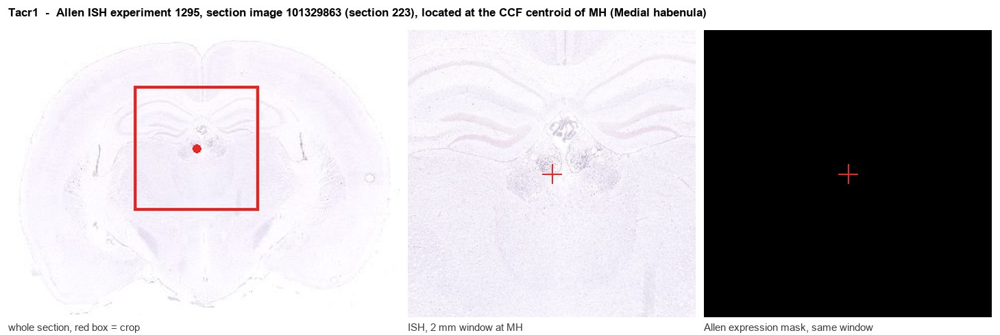
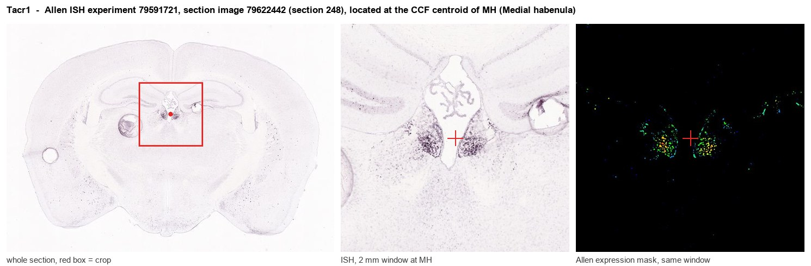
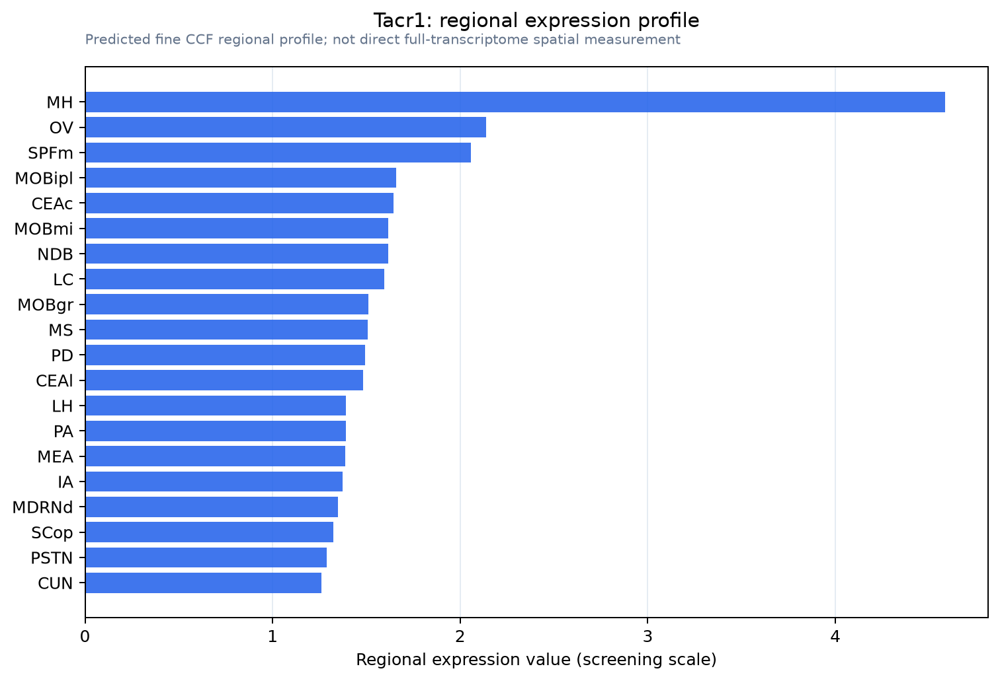

Tacr1
Substance-P receptor (SPR) (NK-1 receptor) (NK-1R) (Tachykinin receptor 1)
Spatial tier: RESTRICTED · Class: GPCR · Top region: MH (Medial habenula) · Positive regions: 17/554
Function in MH: evidence, prediction, innovation
- Gene function
- TACR1 encodes the neurokinin-1 (NK1) receptor, a class A G-protein-coupled receptor with highest affinity for substance P. It couples to Gq, driving phospholipase C and calcium mobilisation, and it internalises strongly on agonist binding. NK1 antagonists such as aprepitant are clinically effective antiemetics, although they failed as analgesics and antidepressants.
- Region function
- The medial habenula is a dorsal diencephalic nucleus whose cholinergic, glutamatergic and substance-P neurons project almost exclusively through the fasciculus retroflexus to the interpeduncular nucleus; it controls nicotine aversion and withdrawal, anxiety and mood.
- Published in this region
- inferred No region-specific literature found. Substance P is a defining transmitter of the dorsal medial habenula - Hsu et al. 2016 showed that tachykinin-expressing dMHb neurons support intracranial self-stimulation and regulate mood-related behaviour - but the NK1 receptors that read this signal have been studied at the target end, in the interpeduncular nucleus, where substance P transmission shapes plasticity alongside nicotinic signalling (Melani & Shen 2019; Eggan & Mineur 2017).
- Predicted function
- Prediction: NK1 receptors within the medial habenula itself are predicted to act as autoreceptors or local-circuit receptors, so that substance P released from dMHb collaterals feeds back to sustain the tonic firing of neighbouring habenular neurons - a positive-feedback arrangement that would explain how a brief aversive stimulus produces a prolonged habenular response. Local infusion of an NK1 antagonist such as L-733,060 or aprepitant into MH is predicted to shorten the duration of habenular activation after nicotine or footshock and reduce sustained aversive behaviour, while MH-restricted Tacr1 deletion should blunt nicotine withdrawal and anxiety-like behaviour without affecting acute nociception.
- Innovation
- ★★★★☆ 4/5 Substance P biology in the habenulo-interpeduncular pathway is well known but the receptor has only been examined at the interpeduncular target, leaving the habenular side untested despite excellent clinical-grade antagonists.
- Tools
- Tacr1 knockout and Tacr1 floxed mice, Tacr1-CreER lines; antagonists aprepitant, L-733,060 and RP67580; substance P and the selective agonist GR73632; substance P-saporin for NK1-cell ablation; radioligands and NK1 PET tracers; Tac1-Cre and Chat-Cre for habenular subpopulations.
- References
Direct evidence located at the region

Allen ISH experiment 1295, section image 101329863 (section 223): the section that contains the CCF centroid of Medial habenula according to the Allen image-to-atlas alignment (reference_to_image), with a 2 mm window around that point. Left: whole section, red box = window. Middle: ISH signal. Right: Allen's expression-mask view of the same window. open this image in the Allen viewer

Allen ISH experiment 79591721, section image 79622442 (section 248): the section that contains the CCF centroid of Medial habenula according to the Allen image-to-atlas alignment (reference_to_image), with a 2 mm window around that point. Left: whole section, red box = window. Middle: ISH signal. Right: Allen's expression-mask view of the same window. open this image in the Allen viewer
Direct spatial evidence

Regional expression figure

Predicted WMB × fine-CCF profile; not direct full-transcriptome spatial measurement.
Spatial profile
Evidence and specificity
- Evidence status
- PREDICTED_FINE
- Direct sources
- None; predicted localization only
- Exclusive threshold
- 12 positive regions out of 554
- Spatial specificity
- 0.283
- Top-region fraction
- 0.069
- Filter status
- PASS
Interpretation limits
- Cell-type-to-region projection is imputed expression, not direct spatial measurement.
- Adult reference atlases do not establish stability across age, sex, strain, state, or disease.
- Transcript abundance does not guarantee protein abundance or genetic-tool performance.